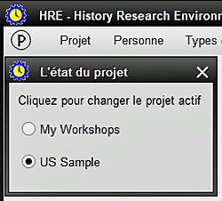
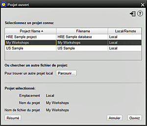

Cet écran vous permet d'ouvrir un projet HRE existant à partir de n'importe quel emplacement choisi. Il deviendra alors le PROJET ACTIF. HRE permet d'ouvrir jusqu'à TROIS projets à tout moment, mais un seul peut être nominé pour être ACTIF. Ce sera soit le dernier projet ouvert, ou le projet sélectionné à l'aide du symbole d'avis de projet "P" à la fin de la barre de menus. OUVERTURE RAPIDE: les projets récemment utilisés sont affichés sous forme de liste au bas du menu Projet, sous les options du menu. Les projets récents, identifiés par le logo HRE peuvent être ouverts en cliquant sur le nom du projet.  1. Pour ouvrir un projet HRE existant, PARCOURIR jusqu'à l'emplacement de la base de données s'il n'est pas affiché dans la liste par défault Les projets peuvent être locaux, sur un réseau ou sur un lecteur amovible. 2. Le nom du projet sélectionné et le nom du fichier actuel sont affichés, et un RÉSUMÉ peut être affiché 3. Cliquez sur OUVRIR (ou double-cliquez sur le nom du projet) pour ouvrir le projet, ou sur ANNULER pour quitter cet écran 4. Une fois qu'un projet a été ouvert. il deviendra automatiquement le projet actif 5. À tout moment, vous pouvez choisir de modifier le projet actif. |
|
Sujets Relatifs
|